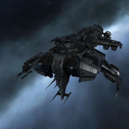

Ferox

Тип корабля: Линейный крейсер
Государство/Организация: Caldari
Примерная стоимость: 47.000.000 ISK
Описание
Линейный крейсер типа «Ферокс» был спроектирован, чтобы выглядеть и функционировать как бескомпромиссная машина для убийства. Смертный ужас — вот что почувствует каждый, оказавшийся в его прицеле. «Фероксы» могут с успехом применяться для выполнения широкого спектра боевых задач, залогом чему служит высокая огневая мощь и отличная способность к ведению радиоэлектронной борьбы.
Характеристики
Корпус
Запас прочности корпуса: 4.000 ед.
Вместимость грузового отсека: 475 м^3
Объем отсека для дронов: 25 м^3
Пропускная способность канала телеуправления: 25 Мбит/с
Масса: 14.250.000 кг
Занимает объем: 252.000,0 м^3 (15.000,0 м^3 в разобранном виде)
Влияние инертности конструкции: 0,66x
Сопротивление корпуса ЭМ-урону: 33 %
Сопротивление корпуса термальному урону: 33 %
Сопротивление корпуса кинетическому урону: 33 %
Сопротивление корпуса фугасному урону: 33 %
Броня
Запас прочности брони: 3.500 ед.
Сопротивление брони ЭМ-урону: 50 %
Сопротивление брони термальному урону: 45 %
Сопротивление брони кинетическому урону: 25 %
Сопротивление брони фугасному урону: 10 %
Щит
Запас прочности щита: 5.250 ед.
Влияние на время регенерации щитов: 23 минут и 20 секунд
Сопротивление щита ЭМ-урону: 0 %
Сопротивление щита термальному урону: 20 %
Сопротивление щита кинетическому урону: 40 %
Сопротивление щита фугасному урону: 50 %
Сопротивление средствам РЭП
Сопротивление накопителя нейтрализирующему воздействию: 0 %
Сопротивление воздействию генератору стазис-поля: 0 %
Сопротивление воздействию помех на наводку вооружения: 0 %
Накопитель энергии
Емкость накопителя: 2.900,0 ГДж
Время востановления заряда: 12 минут и 5 секунд
Целеуказания
Максимальная дальность захвата цели: 75 км
Максимальное количество захваченных целей: 8
Радиус сигнатуры: 325 м
Разрешающая способность систем захвата цели: 195 мм
Эффективность радарной системы: -
Эффективность магнитнометрической системы: -
Эффективность гравиметрической системы: 19 ед.
Эффективность ладарной системы: -
Двигательная установка
Максимальная скорость: 145 м/с
Скорость в варп-режиме: 3,5 а.е./с.
Служба оснащения
Мощность ЦПУ: 515,0 Тф
Мощность реактора: 1.150 МВт
Калибровка: 400 ед.
Точки монтажа орудийных установок: 6
Точки монтажа пусковых установок: -
Разъемы большой мощности: 7
Разъемы средней мощности: 6
Разъемы малой мощности: 4
Разъемы под установку тюнинг-модулей: 3